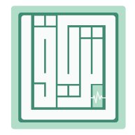

TERYAQ Master Tool
Sign in once on this device, then continue working offline with your local workspace.

Sign in once on this device, then continue working offline with your local workspace.
Your scientific workspace is ready. Create, edit offline, and synchronize safely when the connection returns.
TERYAQ Master Tool v2.5.14Find every active document and open its history, sync state, or conflict.
Choose a structured template, then complete its basic information.
Deleted documents stay recoverable. Restore one to your Documents list.
A complete bilingual reference for every daily workflow and common problem.
The guide tells you where each feature lives, what every status means, and what to do when something does not work.
يوضح الدليل مكان كل خيار، ومعنى كل حالة، والخطوات المناسبة عند حدوث مشكلة.
Go to Documents. Open and History & Versions are visible. Duplicate, Export, and Move to Trash are inside the ••• menu. Use the square checkboxes to select several visible documents or select all, then move the selected group to Trash.
من صفحة Documents. زر Open وHistory & Versions ظاهران، بينما Duplicate وExport وMove to Trash داخل قائمة •••. استخدم مربعات التحديد لاختيار عدة ملفات ظاهرة أو تحديد الكل، ثم انقل المجموعة المختارة إلى السلة.
Moving the controls does not change any style definition. Inline marks such as Side Note, Note to Delete, High-Yield, and Clinical Correlation still require selected text.
يعتمد الاتجاه على أول حرف فعلي في كل بند: إذا بدأ النص بالعربية تظهر العلامة من اليمين، وإذا بدأ بالإنجليزية تبقى من اليسار. يمكن أن يحتوي نفس المستند على بنود عربية وإنجليزية باتجاهين مختلفين.
استخدم زر Back أعلى المحرر للعودة؛ يتم حفظ التعديلات المحلية المعلقة قبل الخروج.
يُحفظ كل تعديل داخل IndexedDB على نفس الجهاز، وتدخل التغييرات في قائمة انتظار. لا يحتاج إنشاء المستند أو تعديله أو تصديره إلى الإنترنت بعد تجهيز الجهاز أول مرة. عند عودة الاتصال يبدأ Auto Sync تلقائيًا.
بيانات الأوفلاين مرتبطة بالجهاز والمتصفح والحساب. مسح بيانات الموقع أو حذف التطبيق قد يمسح العمل المحلي غير المتزامن، لذلك استخدم النسخ الاحتياطي قبل ذلك.
synced Saved locally and accepted by the cloud.
pending Safe on this device and waiting to upload.
local-only Exists only on this device so far.
conflict Another cloud change needs your decision.
تعمل دائمًا عند توفر الإنترنت: بعد الحفظ، وعند عودة الاتصال، وعند فتح التطبيق أو الرجوع إليه، ومع فحص كل 15 ثانية. إذا فشلت محاولة مؤقتًا يبقى التعديل محفوظًا محليًا ويُعاد إرساله تلقائيًا.
بعد أول تسجيل دخول على جهاز جديد، وقبل تغيير الجهاز، وبعد حل تعارض، أو إذا بقيت حالة pending مدة غير طبيعية. تعرض Settings آخر محاولة وأي خطأ.
The affected document shows a red conflict status in Documents. The top conflict button lists all unresolved conflicts.
عندما يعدّل جهازان المستند نفسه انطلاقًا من نفس النسخة قبل أن يتزامنا. لا يستبدل التطبيق أي نسخة تلقائيًا.
اختر Save both ثم راجع النسختين يدويًا، خصوصًا للمحتوى العلمي.
Local recovery snapshots kept on this device. Open the document and choose History / Versions. You can create a snapshot or restore an earlier state.
An immutable cloud snapshot created after every accepted synchronization. Choose Cloud versions & compare to select an earlier and later version, review metadata/content changes side by side, download one version, or download the complete archive. Comparison is read-only and never changes the live document.
History للاستعادة السريعة على الجهاز نفسه، أما Version فهي نسخة سحابية ثابتة لكل مزامنة ناجحة. من Cloud versions & compare اختر نسختين لرؤية المضاف والمحذوف والمتغير والمنقول دون تعديل الملف الحالي. استعادة History تحفظ الحالة الحالية أولًا ثم تعيد النسخة المختارة.
Documents → ••• → Move to Trash. A complete recoverable copy is kept locally and the soft-delete is queued for cloud sync. A deleted document no longer contributes to the active conflict count.
Trash → Restore returns your document. Admin → All Trash can also restore a user's synchronized deleted document; it returns as a higher cloud version and reaches the owner on the next sync.
Only an administrator may permanently delete a synchronized Trash item, only after the configured 30-day retention period, and only after typing PURGE. The action removes version history and Storage attachments and remains recorded in the Audit Log.
عند نقل ملف متعارض إلى السلة يختفي من عداد التعارضات النشطة، لكن التطبيق يحفظ حالته. إذا استُعيد الملف من سلة المستخدم يعود معه التعارض ليُحل بالطريقة الصحيحة.
المستخدم يرى محذوفاته فقط. الأدمن يرى المحذوفات المتزامنة لكل الحسابات من Admin → All Trash ويمكنه استعادتها. الحذف النهائي محصور بالأدمن، ولا يسمح به السيرفر قبل مرور 30 يومًا، ولا يمكن التراجع عنه.
On sign-in choose Request an Account, send your name and email, then wait for admin approval. The request alone does not create immediate access.
Open the avatar menu in the top-right corner → Profile. Change the display name or choose a JPG/PNG/WebP photo. Reposition and zoom the photo in the crop tool, then apply it. The result is saved locally first and uploaded when internet returns. Use default restores the vector avatar.
Use Profile to change an 8+ character password. Use the avatar menu → Settings for Sync, Cloud connection, backups, device data, and Sign out & Remove Local Data.
اضغط الصورة أعلى يمين الداشبورد ثم Profile. بعد اختيار الصورة يمكنك تحريكها وتكبيرها وضبط القص قبل اعتمادها؛ تُحفظ محليًا أولًا ثم تُرفع عند عودة الإنترنت. زر Use default يعيد الصورة الافتراضية.
من قائمة الصورة اختر Settings للمزامنة والنسخ الاحتياطي وبيانات الجهاز. Sign out يبقي البيانات المحلية، أما Sign out & Remove Local Data فيحذف بيانات الحساب من هذا الجهاز فقط.
Analytics للإحصائيات السحابية، وCloud Conflicts لبيانات التعارض دون عرض المسودة المحلية، وAccount Requests للموافقة وإرسال الدعوة، وAudit Log لمراجعة الأحداث وتصدير CSV، وAll Trash للاستعادة أو الحذف النهائي بعد مدة الاحتفاظ.
لا يستطيع الأدمن رؤية تعديل ما زال محليًا على جهاز مستخدم؛ يجب أن تتم المزامنة أولًا. حل محتوى التعارض يبقى عند مالك المستند.
المستندات المحلية، القوالب، نقاط History، السلة، والتعارضات الخاصة بالحساب على هذا الجهاز. الاستعادة تُنشئ نسخة أمان محلية قبل الكتابة.
لا يعني أن شخصًا آخر عدّل الملف. يعني أن نفس Document ID مرتبط بمعرّف حساب سحابي آخر. من الإصدار 2.3.2 يحفظ التطبيق نسخة أمان، ينشئ Document ID جديدًا للحساب الحالي، ثم يعيد المزامنة دون استبدال السجل السحابي الآخر.
تأكد أن أول حرف فعلي في البند عربي. الاتجاه يُحسب لكل بند على حدة؛ البنود التي تبدأ بالإنجليزية تبقى من اليسار.
Manage automatic synchronization, cloud connection, backups, and this device.
Manage the name and photo shown across TERYAQ.
Manage access, content, cloud operations, analytics, governance, and user updates.
Each figure follows one of the five outcomes below.
Order 1: only when the writer is certain there are no copyright issues and the style is suitable.
Order 3 defaults: Tajawal/English; change skin color and gender when suitable; minor color change; preserve anatomy/histology exactly; alter only non-scientific visual features; remove logos/signatures/watermarks/unnecessary titles; white background; final image 1:1. Any exception or extra change must be stated in PROMPT → DETAILS.
Order 4: clearly define the desired final output. Order 5: clearly describe what should be searched for.
Very important: figure code contains only the figure number; title is mandatory; caption is optional.